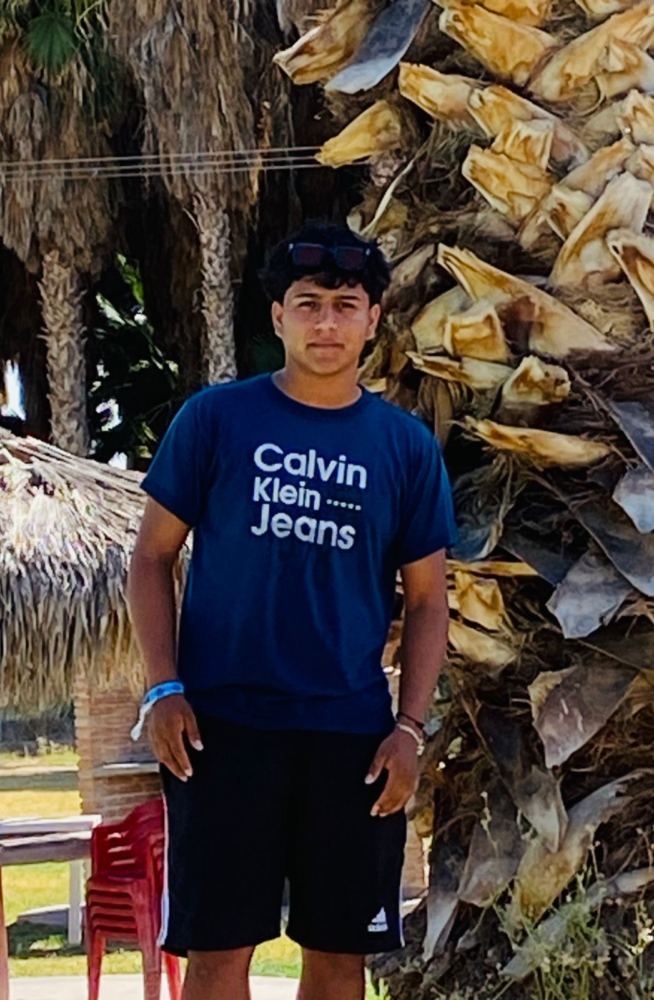

Los mejores nutriólogos de Nutri Fit son profesionales altamente calificados en el campo de la nutrición y el bienestar. Se destacan por su enfoque integral y personalizado, ofreciendo planes de alimentación adaptados a las necesidades individuales de cada cliente. Estos expertos combinan conocimientos científicos actualizados con técnicas innovadoras para ayudar a sus pacientes a alcanzar sus objetivos de salud y fitness, ya sea para mejorar el rendimiento deportivo, gestionar condiciones de salud específicas o simplemente llevar un estilo de vida más saludable. Con una sólida formación en dietética y nutrición clínica, los nutriólogos de Nutri Fit se comprometen a educar y motivar a sus pacientes, proporcionando herramientas y recursos que fomentan hábitos alimenticios sostenibles y cambios positivos en el estilo de vida.
Lic.Aldo Garcia
Egresado De La Facultad de Nutricion,Unversidad Juares Del Estado De Durango.
E disfrutado cada momento de mi carrera y mi trabajo como nutricionista en pocos mese ingreasre a la especialidad de GEDEATRIA,
hoy en dia tengo mi consultoio con de mas colegas nutrucionistas de dirente univeridades, a lo largo de mi vida me ha guastdo apoyar a quin mas lo necista, El apoyo incondicional que les tengo a mis pacientes,en algun futuro me gustaria tener un posgrado en nutricion clinica, tabien desde hace varios años e combinado mi trabajo en consulta con formacon de talleres y charlas motivacionales pa una mejor educacion alimenticia en ploblaco general.
Lic.Diego Martinez
Egresado De La Universidad Autonoma De Durango.
Me sieto feliz de comeprobar que todo el esfuerzo de mi carrera como NUTRIOLOGO, a sido de mucha dedicasion ya que todo lo que me propuse hoy lo estoy ejerciendo, y mi relevancia de mi especialidad duro de unos pocos meses y hoy en dia ya tengo mi consultorio ubicado en el Ejido. EL LUCERO,DGO. y todos mis estudios son dedicados pra mi familia.
Lic.Iker Emiliano Hernandez

Egresado De La Factuldad De Nutricion, Universidad Autonoma De Coahuila.
he adquirido una sólida formación académica que me ha preparado para enfrentar los retos del presente y futuro. Mis años de estudio te han brindado no solo conocimientos específicos de tu carrera, sino también habilidades como el pensamiento crítico, la resolución de problemas y el trabajo en equipo. En tu presente, es probable que estés aplicando tus conocimientos en el campo laboral, ya sea en un empleo relacionado directamente con tu carrera o bien en un área donde puedas poner en práctica las habilidades adquiridas durante tus estudios. Es importante que sigas aprendiendo y creciendo profesionalmente, buscando oportunidades para seguir desarrollándote y alcanzar tus metas. Mirando hacia el futuro, es posible que tengas metas claras tanto a corto como a largo plazo. Puede ser que te plantees continuar con estudios de posgrado para especializarte aún más en tu campo, o bien que estés enfocado en consolidar tu carrera profesional y buscar oportunidades de crecimiento. Sea cual sea tu camino, recuerda que tu formación universitaria te ha proporcionado una base sólida sobre la cual construir tu futuro. Recuerda que siempre es bueno seguir aprendiendo y actualizándote en tu área